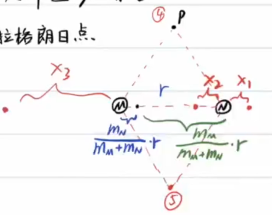
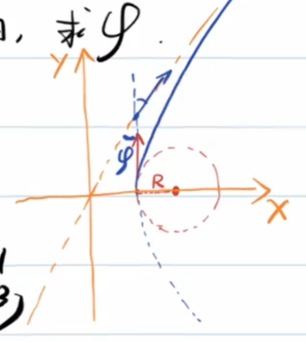
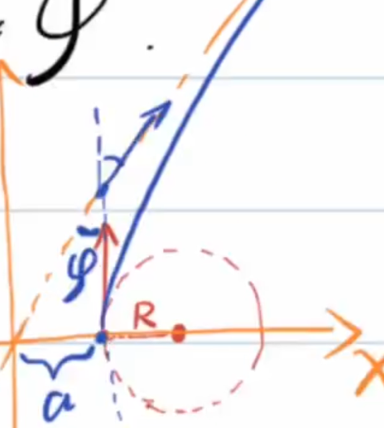
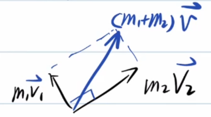
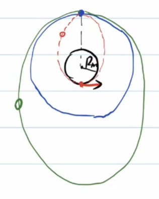
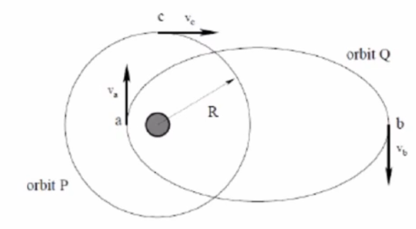
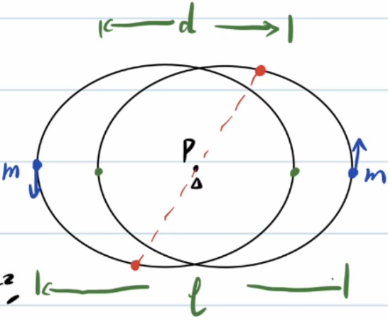

<meta data-freshmark-page data-title="天体运动:最终章 — Freshmark" data-description="本文系统介绍了天体运动中的几个核心专题，包括拉格朗日点的求解与小量近似、双曲线与抛物线轨道问题、开普勒第一定律的微积分推导，以及若干典型习题的详细解答。" data-canonical="https://example.com/posts/physics/celestial-movement/" data-article="true"><main><header class="container article-header"><a class="back-link" href="/">← Back to all writing</a><h1>天体运动:最终章</h1><p class="article-dek">本文系统介绍了天体运动中的几个核心专题，包括拉格朗日点的求解与小量近似、双曲线与抛物线轨道问题、开普勒第一定律的微积分推导，以及若干典型习题的详细解答。</p><div class="article-meta"><time datetime="2026-06-17">June 17, 2026</time><span>5 min read</span><span>物理竞赛 · 微积分</span><a href="index.md" download>Download Markdown</a></div></header><div class="article-wrap"><aside class="toc"><p>On this page</p><a href="#">天体运动综合</a><a href="#">一:拉格朗日点</a><a href="#">情况一</a><a href="#">情况二</a><a href="#">情况三</a><a href="#1">例1</a><a href="#">问题</a><a href="#">二:双曲线轨道</a><a href="#">三:抛物线轨道</a><a href="#">习题</a><a href="#1">例1</a><a href="#2">例2</a><a href="#3">例3</a><a href="#">开普勒第一定律(由万有引力公式出发)</a><a href="#">快速记忆</a><a href="#4">例4</a></aside><article class="prose"><!--more-->
<h1 id="">天体运动综合</h1>
<h2 id="">一:拉格朗日点</h2>
<p>三个天体M,N,P,满足\(m_M\gt\gt m_N\gt m_P\)</p>
<p>请问空间中存在几个点,使得P在该点能相对M,N静止(M,N,P形成稳定转动)</p>
<p>由万有引力定律中的朝花夕拾,知:</p>
<p>如果P,M,N不共线,则P,M,N形成正三角形,这样便找出了2个点.</p>
<p>以M,N为转动惯性系,则P受到由M,N质心指向P的离心力和M,N对P的引力.</p>
<p>由于\(m_M\gt\gt m_N\gt m_P\),近似认为三者旋转的中心为M,N质心</p>
<p></p>
<h4 id="">情况一</h4>
<p>从左向右,分别为M,N,P \[\begin{gathered} \frac{Gm_Pm_M}{(r+x_1)^2}+\frac{Gm_Pm_N}{x_1^2}=m_Pw^2(r+x_1)\\ G\frac{m_Mm_N}{r^2}=m_Nw^2r\frac{m_M}{m_M+m_N}\\ \frac{Gm_M}{(r+x_1)^2}+\frac{Gm_N}{x_1^2}=G\frac{m_M+m_N}{r^3}(r+x_1)\\ m_M(3r^2x_1^3+3rx_1^4+x_1^5)=m_N(r^5+2r^4x_1-3r^2x_1^3-3rx_1^4-x_1^5)\\ \end{gathered}\]</p>
<p>这里引入一种<strong>小量近似</strong>的方法:我们先假设\(x_1\)相对\(r\)为小量,然后检查结果的合理性.</p>
<p>\[\begin{gathered} m_M(3r^2x_1^3)=m_Nr^5\\ x_1=\sqrt[3]{\frac{m_N}{3m_M}}r\lt\lt r \end{gathered}\]</p>
<p>小量近似合理.</p>
<h4 id="">情况二</h4>
<p>\[\begin{gathered} \frac{Gm_Pm_M}{(r-x_2)^2}-\frac{Gm_pm_N}{x_2^2}=m_Pw^2(r-x_2)\\ \frac{Gm_Pm_M}{(r-x_2)^2}-\frac{Gm_pm_N}{x_2^2}=\frac{Gm_P(m_M+m_N)}{r^3}(r-x_2)\\ \end{gathered}\]</p>
<p>类似有:\(x_2=\sqrt[3]{\frac{m_N}{3m_M}}r\)</p>
<h4 id="">情况三</h4>
<p>由于\(m_N\lt\lt m_M\)且P离M更近,N对于P的引力可以忽略,显然得\(x_2=r\)</p>
<h3 id="1">例1</h3>
<p></p>
<p>如图，设想一根“天梯”沿地月连线方向放置：左端靠近地球，右端靠近月球，但两端都不接触地球或月球，均悬在空间中。</p>
<p>已知：s</p>
<ul><li>地月距离为 \(r\)；</li><li>天梯可视为均匀细杆；</li><li>天梯材料密度为 \(\rho\)；</li><li>天梯横截面积为 \(S\)；</li><li>地球表面重力加速度为 \(g\)；</li><li>月球表面重力加速度为 \(g_{\text{月}}\)；</li><li>地球半径为 \(R_{\text{地}}\)；</li><li>月球半径为 \(R_{\text{月}}\)。</li></ul>
<h2 id="">问题</h2>
<p>这个配重应该挂在靠近地球的一端，还是靠近月球的一端？</p>
<ol><li>若要求天梯相对地月系统保持静止，并且天梯两端都悬空，那么需要在天梯某一端挂一个配重。  </li></ol>
<p>试说明它与地月系统中的拉格朗日点有什么关系。</p>
<ol><li>天梯上哪一点最容易被拉断？  </li></ol>
<p>(1)以地月连线为系,引入惯性力</p>
<p>先考虑无配重情况下,杆受的合外力.</p>
<p>直接求解较为困难,考虑<strong>虚功原理</strong>:</p>
<p>考虑这个过程:用一个虚拟的力\(F\)(正方向向月球)把天梯向月球端移动一小段距离\(\Delta L\)</p>
<p>一开始,系统的转动中心近似在地心附近,故一开始地球端一小段的离心势能(由于惯性离心力做功而产生的势能)接近于0.</p>
<p>\[\begin{gathered} \Delta E=F\Delta L=\rho S\Delta L[(0-(-\frac{GM_e}{R_e}))+(-\frac{GM_m}{R_m}-0)]+(-\frac{1}{2}w^2r^2\rho S\Delta L-0)\\ F\gt\gt 0 \end{gathered}\]</p>
<p>所以,得到木杆所受合外力向地球.应该在月球端放一个配重,以受到月球更大的引力.</p>
<p>(2)可以发现,以月地连线为系,在中间的拉格朗日点左边,天梯所受的引力和离心力的合力向左;在中间的拉格朗日点右边,天梯所受的引力和离心力的合力向右</p>
<p>每一部分向左的力会累加,每一部分向右的力也会累加,所以在中间的拉格朗日点所受的左右拉力差最大,最容易断裂.</p>
<h2 id="">二:双曲线轨道</h2>
<p>机械能\(E=\frac{GMm}{2a}\gt 0\),双曲线方程\(\frac{x^2}{a^2}-\frac{y^2}{b^2}=1\).</p>
<p>有一宇宙飞船绕一行星做匀速直线运动,轨道半径为\(R\),飞船速率为\(v_0\). 飞船突然点火,飞船从\(v_0\)加速到\(\sqrt{3}v_0\),加速度方向与速度方向相同. 这样,飞船沿着新轨道运动. 设\(\varphi\)为由发动机点火时飞船速度方向与飞船里行星最远处时的速度方向之夹角(究极长难句)</p>
<p></p>
<p>由位力定理可得:</p>
<p>\[\begin{gathered} E_0=\frac{1}{2}mv^2+(-\frac{GMm}{r})\\ -\frac{GMm}{r}=-mv^2\\ E=E_0+\frac{1}{2}m[(\sqrt{3}v)^2-v^2]=\frac{1}{2}mv^2\gt 0 \end{gathered}\]</p>
<p>易知飞船新的运动轨道为双曲线,最终速度接近于渐进线方向,只需要求双曲线离心率即可确定之.</p>
<p>熟知天体运动的轨道方程为:</p>
<p>\[\boxed{\frac{\frac{L^2}{GMm^2}}{1+\sqrt{1+\frac{2EL^2}{G^2M^2m^3}}\cos\theta}}\]</p>
<p>\[\begin{gathered} e_0=\sqrt{1+\frac{2E_0L_0^2}{G^2M^2m^3}}=0\\ \frac{2E_0L_0^2}{G^2M^2m^3}=-1\\ E=-E_0,L=\sqrt{3}L_0\\ \frac{2EL^2}{G^2M^2m^3}=3\\ e=2=\sec(90\degree-\varphi)\\ \varphi=30\degree \end{gathered}\]</p>
<p>不那么依赖二级结论的方法:</p>
<p></p>
<p>\[\begin{gathered} \frac{1}{2}m(\sqrt{3}v_0)^2-mv_0^2=0+\frac{1}{2}mv^2\\ m\sqrt{3}v_0R=mvb\\ (R+a)\sin\varphi=a\\ b=(R+a)\cos\varphi\\ \frac{\cos\varphi}{1-\sin\varphi}=\sqrt{3}\\ \varphi=30\degree \end{gathered}\]</p>
<p>例：质量为 \(M\) 的太阳（固定不动，视为质点），质量为 \(m\) 的质点以速度 \(v\)、瞄准距离 \(b\)，从无穷远处，在 \(M\) 的万有引力作用下，沿双曲线靠近 \(M\)，又远离到很远。求散射角 \(\theta\)（运动方向偏转角）。</p>
<p>初速度方向为双曲线渐近线方向,瞄准距离即焦点到渐近线的距离,其大小上等于双曲线半虚轴长b.</p>
<p>以机械能为桥梁求得半实轴a(注意,公式与椭圆轨道符号不同):</p>
<p>\[\begin{gathered} E=\frac{GMm}{a}=\frac{1}{2}mv^2\\ a=\frac{2GM}{v^2},\cos\frac{\pi-\theta}{2}=\frac{a}{c}=\frac{a}{\sqrt{a^2+b^2}}\\ \cos(\pi-\theta)=\frac{a^2-b^2}{a^2+b^2}=\frac{4G^2M^2-v^4b^2}{4G^2M^2+v^4b^2}\\ \theta=\arccos(-\frac{4G^2M^2-v^4b^2}{4G^2M^2+v^4b^2}) \end{gathered}\]</p>
<h2 id="">三:抛物线轨道</h2>
<p>两个质量均为m的彗星沿各自的抛物线轨道绕太阳运动,两轨道共面,当两彗星运动到离太阳距离为R处时,相互<strong>垂直相碰</strong>,并结合成一个天体,讨论此时结合天体以后的轨道.</p>
<p>显而易见,两天体碰撞前后引力势能不变,动能减小(非弹性碰撞),故总机械能\(E\lt0\),新轨道为椭圆.</p>
<p>进一步,计算新轨道的半长轴.</p>
<p>\[\begin{gathered} \Delta E=\frac{1}{2}2m(\frac{\sqrt{2}}{2}v)^2-2\frac{1}{2}mv^2=-\frac{1}{2}mv^2\\ E=0+\Delta E=-\frac{1}{2}mv^2=\frac{GM(2m)}{-2a}\\ a=\frac{2GM}{v^2}\\ \frac{1}{2}mv^2-\frac{GMm}{R}=0\\ \Longrightarrow v^2=\frac{2GM}{R}\\ a=R \end{gathered}\]</p>
<p>问题难度升级,两彗星质量分别为\(m_1,m_2\).</p>
<p>\[\begin{cases} \frac{1}{2}m_1v_1^2-\frac{GMm_1}{R}=0\\ \frac{1}{2}m_2v_2^2-\frac{GMm_2}{R}=0 \end{cases}\Longrightarrow v_1=v_2=\sqrt{\frac{2GM}{R}}\] 考虑两彗星相撞动量守恒,画出矢量三角形:  \[\begin{gathered} (m_1+m_2)v=\sqrt{(m_1v_1)^2+(m_2v_2)^2}\\ v=\frac{1}{m_1+m_2}\sqrt{(m_1v_1)^2+(m_2v_2)^2}\\ E=\Delta E=\frac{1}{2}(m_1+m_2)v^2-\frac{1}{2}(m_1v_1^2+m_2v_2^2)\\ =-\frac{m_1m_2}{2(m_1+m_2)}(v_1^2+v_2^2)=-\frac{2m_1m_2}{m_1+m_2}\frac{GM}{R}=\frac{GM(m_1+m_2)}{-2a}\\ a=\frac{(m_1+m_2)^2}{4m_1m_2}R \end{gathered}\]</p>
<h1 id="">习题</h1>
<h2 id="1">例1</h2>
<p>质量为m的登月器连接在质量为2m的航天飞机长,一起绕地球做匀速圆周运动,轨道半径为月球半径的3倍,航天飞机飞机把登月器反方向射出后,登月器仍沿原方向运动,登上月球表面(轨道与月球相切),在表面停留一段时间,之后经快速启动沿之前椭圆轨道和航天飞机对接,求登月器在月球表面可停留的所有可能时间间隔. 已知月球表面重力加速度\(g_m=1.62m/s^2\),月球半径\(R_m=1.74\times10^6m\).</p>
<p></p>
<p>\[\begin{gathered} \frac{GM_m(2m+m)}{(3R_m)^2}=(2m+m)\frac{v_0^2}{3R_m}\\ v_0=\sqrt{\frac{GM_m}{3R_m}}\\ T_0=\frac{2\pi(3R_m)}{v_0}=6\pi R_m\sqrt{\frac{3R_m}{GM_m}}\\ mg=\frac{GM_mm}{R_m^2}\\ GM_m=g_mR_m^2\\ T_0=6\pi R_m\sqrt{\frac{3R_m}{g_mR_m^2}}=6\pi \sqrt{\frac{3R_m}{g_m}}=9.4h \end{gathered}\]</p>
<p>算出\(T_0\)的好处在于,可以把登月器新轨道周期和航天飞机新轨道周期都借助<strong>开普勒第三定律</strong>表示.</p>
<p>设登月器新轨道半长轴为\(a_1\),周期为\(T_1\),航天飞机新轨道半长轴为\(a_2\),周期为\(T_2\).</p>
<p>\[\begin{gathered} (2m+m)v_0=mv_1+2mv_2\\ 2a_1=3R_m+R_m,a_1=2R_m\\ \frac{T_1}{T_0}=\sqrt{(\frac{2R_m}{3R_m})}=(\frac{2}{3})^\frac{3}{2}=0.54\\ \frac{1}{2}mv_0^2-\frac{GM_mm}{3R_m}=\frac{GM_mm}{-2(3R_m)}\\ \frac{1}{2}mv_0^2=\frac{GM_mm}{6R_m}\\ \Delta E=\frac{GM_mm}{-2(2R_m)}-(-\frac{GM_mm}{6R_m})=-\frac{GM_mm}{12R_m}\\ =\frac{1}{2}m[v_1^2-v_0^2]\\ \frac{1}{2}mv_1^2=\frac{GM_mm}{12R_m},v_1=\frac{\sqrt{2}}{2}v_0\\ 3mv_0=mv_1+2mv_2,v_2=\frac{6-\sqrt{2}}{4}v_0\\ E_2-(-\frac{GM_mm}{3R_m})=\frac{1}{2}2m[v_2^2-v_0^2]=\frac{1}{2}mv_0^2(\frac{11-6\sqrt{2}}{4})=\frac{GM_mm}{6R_m}(\frac{11-6\sqrt{2}}{4})\\ E_2=\frac{1-2\sqrt{2}}{8}\frac{GM_mm}{R_m}=\frac{GM_m(2m)}{-2a_2}\\ a_2=\frac{8}{2\sqrt{2}-1}=4.38R_m\\ \frac{T_2}{T_0}=(\frac{a_2}{a_0})^\frac{3}{2}=1.76\\ T_2=16.5h \end{gathered}\]</p>
<p>只剩下临门一脚:</p>
<p>\[\begin{gathered} T_1+t=nT_2\\ t=nT_2-T_1\\ =(1.76n-0.54)9.4h(n=1,2,3,...)\\ t_{min}=11.5h \end{gathered}\]</p>
<h2 id="2">例2</h2>
<p>(1)如图所示，考虑两个绕着太阳旋转的轨道。一个轨道 \(P\) 是圆形轨道半径为 \(R\)，一个轨道 \(Q\) 是椭圆轨道，远日点是 \(b\) 距离太阳 \(2R\) 到 \(3R\) 之间，近日点是 \(a\)，距离太阳是 \(R/3\) 到 \(R/2\) 之间。由以上条件，计算出 \(\frac{v_a}{v_b}\) 可能的最大值、最小值。</p>
<p></p>
<p>由角动量守恒:</p>
<p>\[v_ar_n=v_br_f\]</p>
<p>所以:\(\frac{v_a}{v_b}=\frac{r_f}{r_n}\in[4,9]\)</p>
<p>(2)大量的相同的微小粒子组成一个球状云。开始时候完全静止。质量密度为 \(\rho_0\) 占据了空中半径为 \(r_0\) 的区域。仅仅在万有引力的作用下，不考虑粒子之间的任何其他作用力或者影响，也不会发生碰撞。请猜出(估算)这些云，坍缩到一点需要花费多少时间？</p>
<p>考虑最外层的粒子运动至中心所需时间:它们相当于在均匀球体的外部(含边界),受到均匀球体的引力相当于质量集中于球心所对应的引力.</p>
<p>\[\begin{gathered} a=\frac{GM}{r^2}\\ =\frac{G(\frac{4}{3}\pi r_0^3\rho_0)}{r^2} \end{gathered}\]</p>
<p>本质上,就是求一个离心率为1的椭圆(退化为直线)的椭圆轨道的半周期.</p>
<p>\[\begin{gathered} T=2\pi \sqrt{\frac{a^3}{GM}}\\ =2\pi \sqrt{\frac{(\frac{r_0}{2})^3}{G(\frac{4}{3}\pi r_0^3\rho_0)}}\\ =2\pi \sqrt{\frac{3}{32G\pi\rho_0}}\\ =\sqrt{\frac{3\pi}{8G\rho_0}}\\ t=\frac{T}{2}=\sqrt{\frac{3\pi}{32G\rho_0}} \end{gathered}\]</p>
<h2 id="3">例3</h2>
<p>两个质点质量为m,万有引力常量为G,若两个质点做特殊的双星运动,即两个质点做形状完全相同的椭圆轨道运动,求运动周期.</p>
<p></p>
<p>不难看出,可以两质点间的万有引力<strong>等效</strong>为在P点放一个质量为\(\frac{m}{4}\)的质点.</p>
<p>\[\frac{a^3}{T^2}=\frac{G(\frac{1}{4}m)}{4\pi^2}\]</p>
<p>而半长轴\(a=\frac{d+l}{4}\),解得:\(T=\pi\sqrt{\frac{16(\frac{l+d}{4})^3}{Gm}}=\pi\sqrt{\frac{(l+d)^3}{4Gm}}\)</p>
<h1 id="">开普勒第一定律(由万有引力公式出发)</h1>
<p>复习椭圆的极坐标方程:</p>
<p>\[\begin{gathered} p=\frac{a^2}{c}-c=\frac{b^2}{c}\\ e=\frac{\rho}{p-\rho\cos\theta}\\ \rho=\frac{ep}{1+e\cos\theta},e\in(0,1) \end{gathered}\]</p>
<p>历史上,胡克使用几何完成了证明,而牛顿使用了<strong>微积分</strong>(或者说<strong>流数法</strong>).</p>
<p>我们使用微积分.</p>
<p>\[\begin{gathered} L=m\rho\rho\dot{\theta}=m\rho^2\dot{\theta}\\ a_n=\ddot{\rho}-\rho\dot{\theta}^2=-\frac{GM}{\rho^2} \end{gathered}\]</p>
<p>注意以上式子中的正方向沿矢径向外.我们消去\(\dot{\theta}\):</p>
<p>\[\begin{gathered} \ddot{\rho}-\rho\frac{L^2}{m^2\rho^4}=-\frac{GM}{\rho^2}\\ A=\frac{1}{\rho},\rho=\frac{1}{A}\\ d(\frac{1}{\rho})=-\frac{1}{\rho^2}d\rho\\ \dot{\rho}=\frac{d\rho}{dt}\\=\frac{d\rho}{d\theta}\frac{d\theta}{dt}\\ =\frac{d\rho}{d\theta}\dot{\theta}\\=\frac{d\rho}{d\theta}\frac{L}{m\rho^2}\\ =-d(\frac{1}{\rho})\frac{L}{md\theta}=-dA\frac{L}{md\theta}\\ \ddot{\rho}=\frac{d(\frac{d\rho}{dt})}{dt}=\frac{d(\frac{d\rho}{dt})}{d\theta}\frac{d\theta}{dt}\\ =-\frac{L^2}{m^2\rho^2}\frac{d^2A}{d\theta^2}\\ -\frac{L^2}{m^2\rho^2}\frac{d^2A}{d\theta^2}-\frac{L^2}{m^2}A^3=-GMA^2\\ \frac{d^2A}{d\theta^2}+(A-\frac{GMm^2}{L^2})=0\\ y=A-\frac{GMm^2}{L^2},\ddot{y}+y=0\\ A-\frac{GMm^2}{L^2}=C\cos(\theta+\varphi)\\ \rho=\frac{1}{A}=\frac{\frac{L^2}{GMm^2}}{1+C\cos(\theta+\varphi)} \end{gathered}\]</p>
<p>显而易见,\(e=C,p=\frac{L^2}{GMm^2}\),并且只要选取正确的极轴,就可以让\(\varphi=0\).</p>
<p>事实上,\(e=\sqrt{1+\frac{2EL^2}{G^2M^2m^3}}\).</p>
<h2 id="">快速记忆</h2>
<p>\(1year=365day=525600min=31536000s\) \(M_{sun}=1.99\times10^{30}kg,M_{earth}=5.98\times10^{24}kg,M_{moon}=7.35\times10^{22}kg,R_{earth}=6.37\times10^6,R_{moon}=1.74\times10^6m,R_{earth-moon}=3.84\times10^8m,R_{earth-sun}=1.5\times10^{11}m=1A.U.,R_{mars-sun}=1.52A.U.,R_{jupiter-sun}=5.02A.U.\)</p>
<h2 id="4">例4</h2>
<p>两颗质量分别为\(M,m\)的超新星相距d,绕其不动的质心各自做圆周运动.在超新星爆炸中,质量为\(M\)的超新星损失质量为\(\Delta M\). 设爆炸是瞬时的,且完全球对称,忽略爆炸碎物对质量为m的超新星的直接作用.</p>
<p>为了使余下的双星仍被束缚,而不会相互远离,求\(\Delta M\)的最大值.</p>
<p>题目条件相当于,在<strong>质心系</strong>中体系的机械能小于0.</p>
<p>\[\begin{gathered} r_M=\frac{m}{M+m}d,r_m=\frac{M}{M+m}d\\ \frac{GMm}{d^2}=M\omega^2r_M\\ \end{gathered}\]</p>
<p>由于爆炸完全球对称,所以剩余部分的速度不变,但是速度减小了,这意味着质心速度不再为0了.</p>
<p>\[\begin{gathered} v_c=\frac{m\omega r_m-(M-\Delta M)\omega r_M}{M+m-\Delta M}\\ E_{kc}=\frac{1}{2}(m+M-\Delta M)v_c^2\\ E_{k}=\frac{1}{2}(M-\Delta M)(r_M\omega)^2+\frac{1}{2}m(r_m\omega)^2\\ U=-\frac{G(M-\Delta M)m}{d} \end{gathered}\]</p>
<p>以<strong>爆炸后的质心</strong>为系,结合<strong>科尼希定理</strong>:</p>
<p>\[\begin{gathered} E&#39;=E_k-E_{kc}+U\lt0\\ \Longrightarrow \Delta M\lt\frac{M+m}{2} \end{gathered}\]</p></article></div></main>